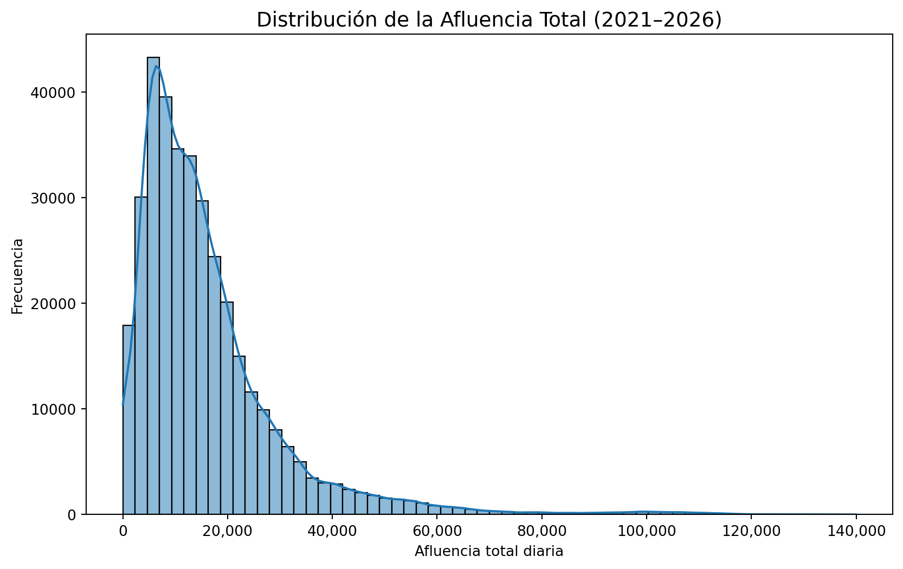
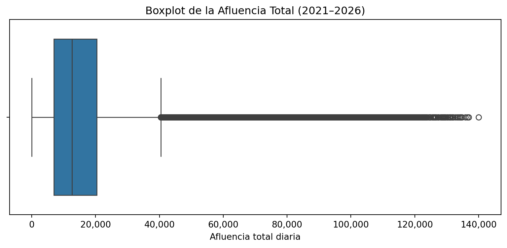
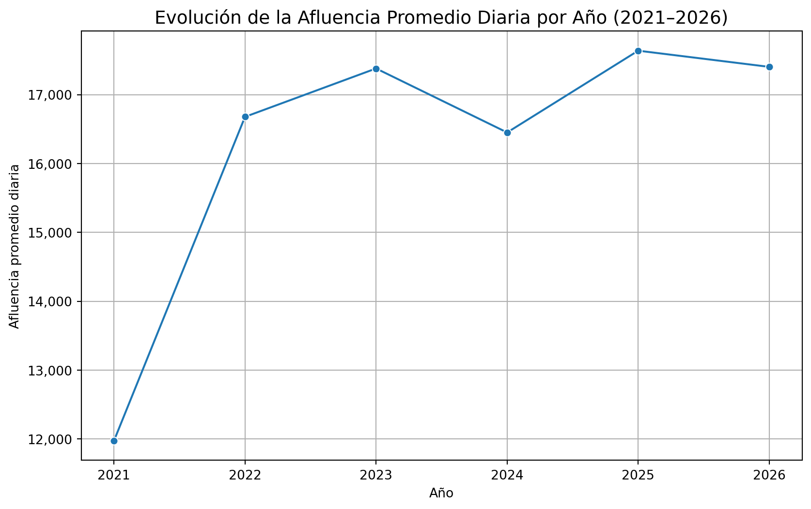
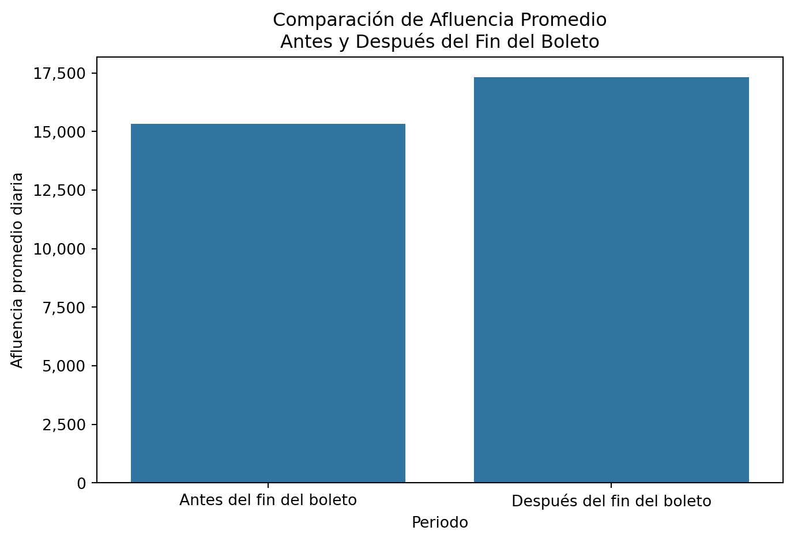
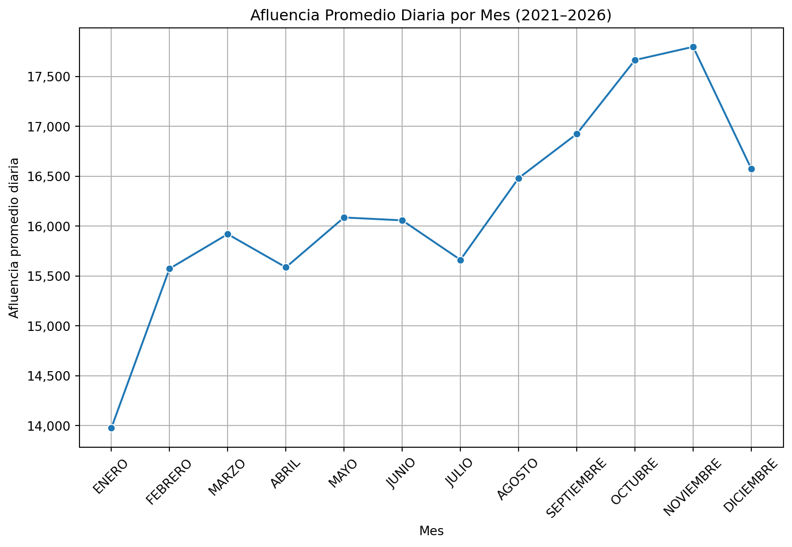
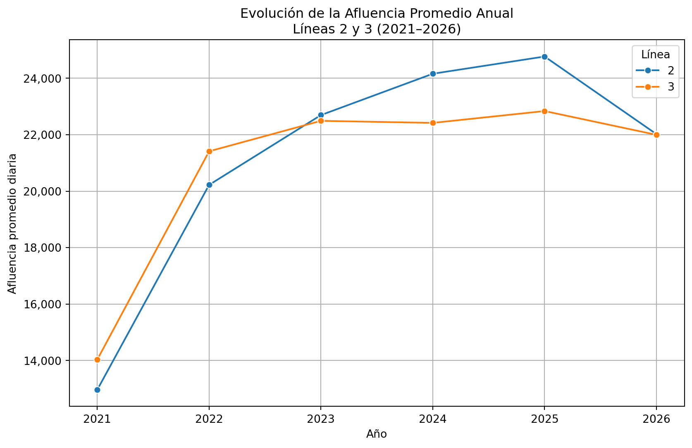
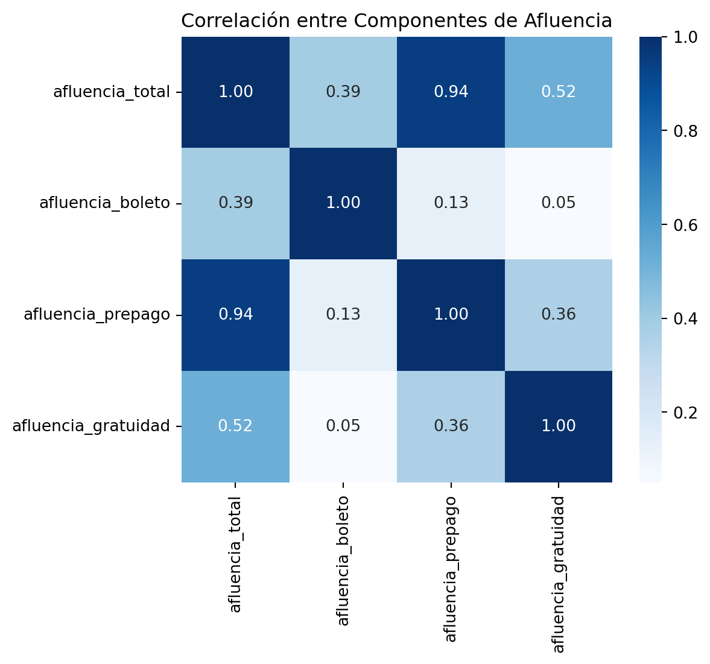

El objetivo de esta sección es analizar el comportamiento histórico de la afluencia en las estaciones del Sistema de Transporte Colectivo Metro antes de aplicar modelos de clasificación y clustering.
Trabajaremos sobre el dataset limpio df_modelo.csv, que contiene registros diarios por estación en el periodo comprendido entre 1 de enero de 2021 y 30 de abril de 2026.
4.1 Carga del Dataset
Code
import pandas as pdimport matplotlib.pyplot as pltimport seaborn as snsfrom matplotlib.ticker import FuncFormatter# Cargar dataset limpiodf = pd.read_csv("../../data/processed/df_modelo.csv")# Convertir fecha a datetimedf["fecha"] = pd.to_datetime(df["fecha"])# Mostrar únicamente estructura del datasetdf.info()# Verificar rango temporalprint("Rango temporal del dataset:")print("Inicio:", df["fecha"].min())print("Fin:", df["fecha"].max())
4.2 Distribución de la Afluencia Total (2021–2026)
La variable central de nuestro análisis es afluencia_total, que representa el número total de personas que ingresaron a una estación en un día determinado.
A continuación observamos su distribución en todo el periodo 2021–2026:
Code
plt.figure(figsize=(10,6))sns.histplot(df["afluencia_total"], bins=60, kde=True)plt.title("Distribución de la Afluencia Total (2021–2026)", fontsize=14)plt.xlabel("Afluencia total diaria")plt.ylabel("Frecuencia")# Formato con separador de milesplt.gca().xaxis.set_major_formatter(FuncFormatter(lambda x, _: f"{int(x):,}"))plt.show()

4.3 Interpretación Inicial
A partir del histograma y las estadísticas observadas previamente:
La mayoría de los registros diarios se concentran entre aproximadamente 5,000 y 25,000 pasajeros.
Existen valores extremos que superan los 100,000 pasajeros diarios, lo que indica estaciones de altísima demanda.
La mediana es considerablemente menor que el valor máximo, lo que confirma la presencia de una cola larga.
Esto sugiere que la red presenta una fuerte heterogeneidad: la mayoría de las estaciones operan en rangos moderados de afluencia, mientras que unas pocas concentran niveles extraordinariamente altos de demanda.
En la siguiente sección analizaremos cómo se distribuye esta afluencia por línea para identificar patrones estructurales dentro de la red.
4.4 Detección de Valores Atípicos
Para identificar posibles valores extremos en la variable afluencia_total, utilizamos un boxplot basado en la regla del rango intercuartílico (IQR).
Code
plt.figure(figsize=(10,4))sns.boxplot(x=df["afluencia_total"])plt.title("Boxplot de la Afluencia Total (2021–2026)")plt.xlabel("Afluencia total diaria")plt.gca().xaxis.set_major_formatter(FuncFormatter(lambda x, _: f"{int(x):,}"))plt.show()

4.4.1 Interpretación
El boxplot confirma la presencia de valores atípicos superiores.
Estos registros no representan errores, sino estaciones con alta concentración de demanda.
Por tanto, no se eliminan, ya que reflejan comportamiento real del sistema y son relevantes para el modelado de saturación.
4.5 Afluencia Promedio por Línea
Ahora analizaremos cómo se distribuye la demanda entre las distintas líneas del sistema.
4.5.1 Visualización de la Afluencia Media por Línea
Code
plt.figure(figsize=(10,6))sns.barplot( data=linea_stats.sort_values("afluencia_media", ascending=False), x="linea", y="afluencia_media")plt.title("Afluencia Media por Línea (2021–2026)")plt.xlabel("Línea")plt.ylabel("Afluencia promedio diaria")plt.show()
La Línea 2 presenta la mayor afluencia promedio diaria (≈21,029 pasajeros), seguida muy de cerca por la Línea 3 (≈20,723). Esto indica que ambas concentran la mayor demanda estructural del sistema.
La Línea A y la Línea 9 también muestran niveles elevados de afluencia promedio, lo que sugiere que funcionan como corredores de alta movilidad dentro de la red.
En contraste, las Líneas 4 y 6 presentan los promedios más bajos, con valores cercanos a 6,356 y 8,834 pasajeros diarios respectivamente, lo que indica una demanda estructural considerablemente menor.
En términos de variabilidad, la Línea 3 presenta una desviación estándar elevada (≈18,032), lo que sugiere fluctuaciones importantes en su demanda diaria. Esto puede estar asociado a variaciones estacionales, eventos específicos o cambios operativos.
Este análisis confirma que la demanda no se distribuye de manera uniforme en la red, sino que existen líneas estructuralmente más saturadas que otras.
4.7 Evolución Temporal de la Afluencia (2021–2026)
Para analizar cómo ha cambiado la demanda del sistema a lo largo del tiempo, calculamos el promedio diario anual de afluencia. Es decir, para cada año tomamos todos los días registrados de todas las estaciones y obtenemos el promedio de pasajeros diarios.
plt.figure(figsize=(10,6))sns.lineplot( data=afluencia_anual, x="anio", y="afluencia_total", marker="o")plt.title("Evolución de la Afluencia Promedio Diaria por Año (2021–2026)", fontsize=14)plt.xlabel("Año")plt.ylabel("Afluencia promedio diaria")plt.gca().yaxis.set_major_formatter(FuncFormatter(lambda x, _: f"{int(x):,}"))plt.grid(True)plt.show()

4.8 Interpretación Temporal
El análisis temporal permite observar la dinámica estructural del sistema:
En 2021 se observan niveles aún afectados por el periodo post-pandemia.
A partir de 2022 y 2023 se aprecia una recuperación progresiva de la demanda.
Los años más recientes (2024–2025) muestran una estabilización en niveles elevados de afluencia.
El año 2026 presenta datos parciales (hasta abril), por lo que debe interpretarse con cautela.
Estos resultados muestran que la demanda del sistema no se mantiene constante a lo largo del tiempo. Cambia dependiendo del contexto general de la ciudad, como la recuperación posterior a la pandemia, modificaciones operativas o cambios en el sistema de pago.
4.9 Comparación de Afluencia: Antes y Después del Fin del Boleto Físico
La variable post_boleto indica si el registro corresponde a un periodo:
0 → Antes del 20 de abril de 2024 (uso de boleto físico)
1 → Después del 20 de abril de 2024 (solo tarjeta)
Para analizar si hubo un cambio significativo en la demanda, calculamos el promedio diario en ambos periodos.
Code
afluencia_boleto_periodo = ( df.groupby("post_boleto")["afluencia_total"] .mean() .reset_index())afluencia_boleto_periodo["post_boleto"] = afluencia_boleto_periodo["post_boleto"].map({0: "Antes del fin del boleto",1: "Después del fin del boleto"})afluencia_boleto_periodo
post_boleto
afluencia_total
0
Antes del fin del boleto
15322.651362
1
Después del fin del boleto
17311.190969
4.9.1 Visualización Comparativa
Code
plt.figure(figsize=(8,5))sns.barplot( data=afluencia_boleto_periodo, x="post_boleto", y="afluencia_total")plt.title("Comparación de Afluencia Promedio\nAntes y Después del Fin del Boleto")plt.xlabel("Periodo")plt.ylabel("Afluencia promedio diaria")plt.gca().yaxis.set_major_formatter(FuncFormatter(lambda x, _: f"{int(x):,}"))plt.show()

4.10 Interpretación
Se observa que la afluencia promedio diaria es mayor en el periodo posterior al fin del boleto físico.
Sin embargo, este incremento no puede atribuirse únicamente al cambio en el método de pago. El periodo “antes del fin del boleto” incluye los años 2021 y parte de 2022, que todavía reflejan efectos posteriores a la pandemia, cuando la movilidad urbana se encontraba reducida.
Por el contrario, el periodo posterior coincide con una etapa de recuperación económica y normalización de actividades presenciales, lo que naturalmente incrementa la demanda del sistema.
Por tanto, el aumento observado parece responder más a una recuperación estructural de la movilidad que al efecto directo de eliminar el boleto físico.
4.11 Evolución de la Movilidad por Mes (2021–2026)
Para identificar patrones estacionales en la movilidad del sistema, analizamos la afluencia promedio diaria por mes considerando todo el periodo 2021–2026.
Calculamos el promedio diario de afluencia para cada mes agregando todos los años y todas las estaciones.
plt.figure(figsize=(10,6))sns.lineplot( data=afluencia_mensual, x="mes", y="afluencia_total", marker="o")plt.title("Afluencia Promedio Diaria por Mes (2021–2026)")plt.xlabel("Mes")plt.ylabel("Afluencia promedio diaria")plt.gca().yaxis.set_major_formatter(FuncFormatter(lambda x, _: f"{int(x):,}"))plt.xticks(rotation=45)plt.grid(True)plt.show()

4.12 Interpretación Mensual
El análisis mensual permite identificar patrones de estacionalidad en la movilidad urbana.
Se observan disminuciones en meses como julio o diciembre, esto puede estar asociado a periodos vacacionales escolares.
Meses con mayor afluencia podrían coincidir con ciclos laborales y académicos regulares.
Este comportamiento confirma que la movilidad en la ciudad presenta variaciones sistemáticas a lo largo del año, lo cual es relevante para anticipar periodos de mayor saturación.
4.13 Evolución Temporal: Línea 2 vs Línea 3
Para comparar el comportamiento de las líneas con mayor demanda estructural, analizamos la evolución de la afluencia promedio anual de la Línea 2 y la Línea 3.
Code
# Filtrar únicamente Línea 2 y Línea 3lineas_interes = ["2", "3"]df_filtrado = df[df["linea"].isin(lineas_interes)]# Calcular promedio anual por líneaevolucion_lineas = ( df_filtrado.groupby(["anio", "linea"])["afluencia_total"] .mean() .reset_index())evolucion_lineas
anio
linea
afluencia_total
0
2021
2
12960.211530
1
2021
3
14029.299935
2
2022
2
20222.411073
3
2022
3
21412.470450
4
2023
2
22696.337215
5
2023
3
22492.396477
6
2024
2
24161.320014
7
2024
3
22419.437289
8
2025
2
24772.190411
9
2025
3
22839.158252
10
2026
2
22020.878125
11
2026
3
21996.597222
4.13.1 Visualización Comparativa
Code
plt.figure(figsize=(10,6))sns.lineplot( data=evolucion_lineas, x="anio", y="afluencia_total", hue="linea", marker="o")plt.title("Evolución de la Afluencia Promedio Anual\nLíneas 2 y 3 (2021–2026)")plt.xlabel("Año")plt.ylabel("Afluencia promedio diaria")plt.gca().yaxis.set_major_formatter(FuncFormatter(lambda x, _: f"{int(x):,}"))plt.legend(title="Línea")plt.grid(True)plt.show()

4.14 Interpretación Comparativa
La Línea 2 y la Línea 3 presentan niveles de demanda elevados a lo largo de todo el periodo analizado.
En 2021 se observan valores relativamente menores, lo cual es consistente con el contexto posterior a la pandemia. A partir de 2022 y 2023 se aprecia una recuperación progresiva en ambas líneas.
La Línea 2 mantiene consistentemente una afluencia promedio ligeramente superior a la Línea 3, lo que confirma su posición como la línea con mayor demanda estructural del sistema.
Asimismo, ambas líneas muestran trayectorias similares en el tiempo, lo que sugiere que responden de forma comparable a los cambios generales en la movilidad urbana de la ciudad.
4.15 Relaciones entre Componentes de Afluencia
Para entender cómo se compone la demanda diaria, analizamos la correlación entre los distintos métodos de pago y la afluencia total.
Code
plt.figure(figsize=(6,5))corr_pago = df[["afluencia_total","afluencia_boleto","afluencia_prepago","afluencia_gratuidad"]].corr()sns.heatmap(corr_pago, annot=True, cmap="Blues", fmt=".2f")plt.title("Correlación entre Componentes de Afluencia")plt.show()

4.15.1 Interpretación
Se observa una correlación positiva muy alta entre afluencia_total y afluencia_prepago, lo que indica que el prepago representa la mayor proporción estructural de ingresos al sistema.
La correlación con afluencia_boleto es menor en los años recientes, consistente con su eliminación progresiva.
La variable afluencia_gratuidad muestra una relación positiva moderada, reflejando que su volumen crece junto con la demanda general, pero en menor proporción.
Este análisis confirma que la dinámica del sistema está fuertemente impulsada por el método de prepago, que constituye el componente dominante de la movilidad diaria.
5 Conclusión General del Análisis Exploratorio
El análisis exploratorio del periodo comprendido entre el 1 de enero de 2021 y el 30 de abril de 2026 permite caracterizar cuantitativamente la magnitud y estructura de la demanda del Sistema de Transporte Colectivo Metro.
Durante este periodo se registraron aproximadamente:
Code
print(f"Afluencia total acumulada en el periodo: {df['afluencia_total'].sum():,}")
Afluencia total acumulada en el periodo: 5,774,160,966
Es decir, miles de millones de accesos acumulados en poco más de cinco años, lo que confirma la escala masiva del sistema.
En términos promedio:
La afluencia media diaria por estación es de aproximadamente:
Code
print(f"Afluencia promedio diaria por estación: {df['afluencia_total'].mean():,.0f}")
Afluencia promedio diaria por estación: 16,125
La mediana es menor que la media, lo que confirma la existencia de una distribución asimétrica con cola hacia valores altos.
Existen registros que superan los 100,000 pasajeros diarios, lo que evidencia estaciones con altísima concentración de demanda.
A nivel estructural:
La Línea 2 y la Línea 3 concentran la mayor demanda promedio del sistema.
Las líneas 4 y 6 presentan niveles considerablemente menores.
La desviación estándar elevada en líneas como la 3 indica fluctuaciones importantes en su demanda diaria.
En el análisis temporal:
Se observa una recuperación y estabilización progresiva de la movilidad.
La demanda no es constante en el tiempo, sino dinámica.
Existen patrones estacionales claros, con disminuciones en meses vacacionales y mayor concentración en meses laborales.
La comparación antes y después del fin del boleto físico muestra un aumento en la afluencia promedio diaria, aunque este fenómeno debe interpretarse como parte de una tendencia general de normalización y crecimiento de la movilidad.
En conjunto, el EDA confirma tres hallazgos clave:
La demanda del sistema es altamente heterogénea entre líneas.
Existe variabilidad temporal significativa.
La distribución de afluencia presenta asimetría y valores extremos relevantes.
Estos resultados justifican plenamente el uso de modelos de clasificación para identificar niveles de saturación y técnicas de clustering para segmentar estaciones según su perfil de demanda.
El comportamiento observado no es aleatorio: presenta estructura, patrones y regularidades que pueden ser modeladas y aprovechadas para anticipar niveles críticos de saturación.